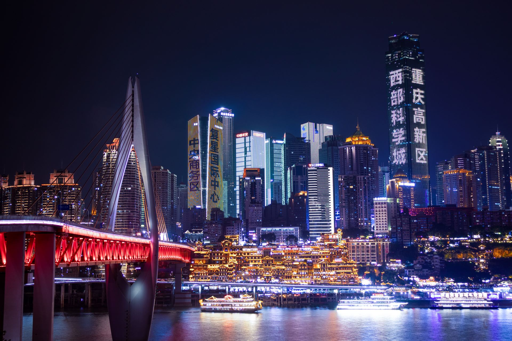
Город-киберпанк, горы из «Аватара» и тёплое море Хайнаня. 12 дней, без визы, вдвоём.
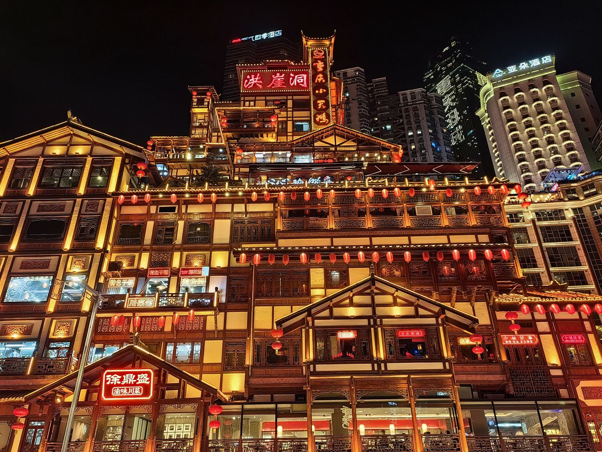
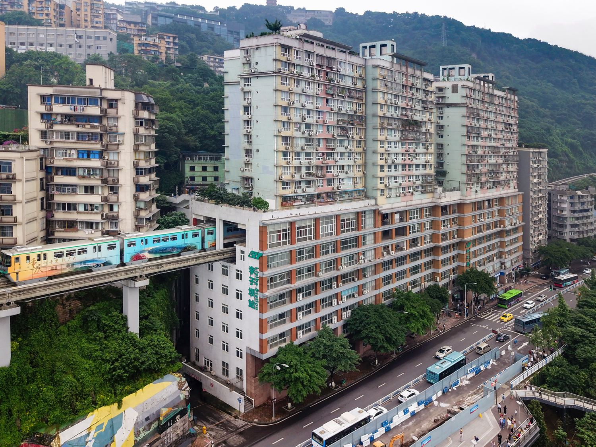
Мегаполис на 30 млн, построенный на скалах. Улицы в 8 уровней, неон, туман над Янцзы.
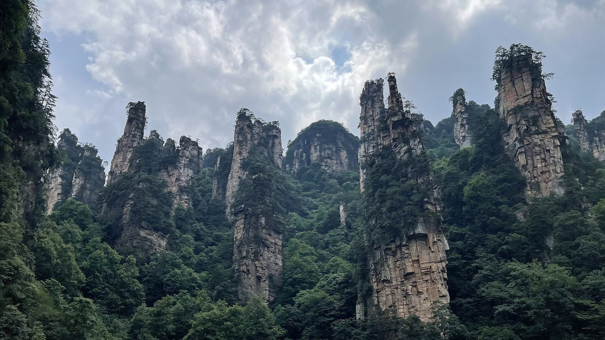
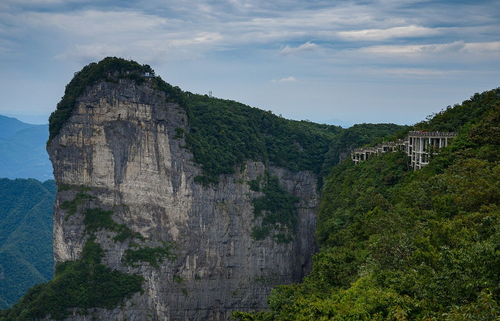
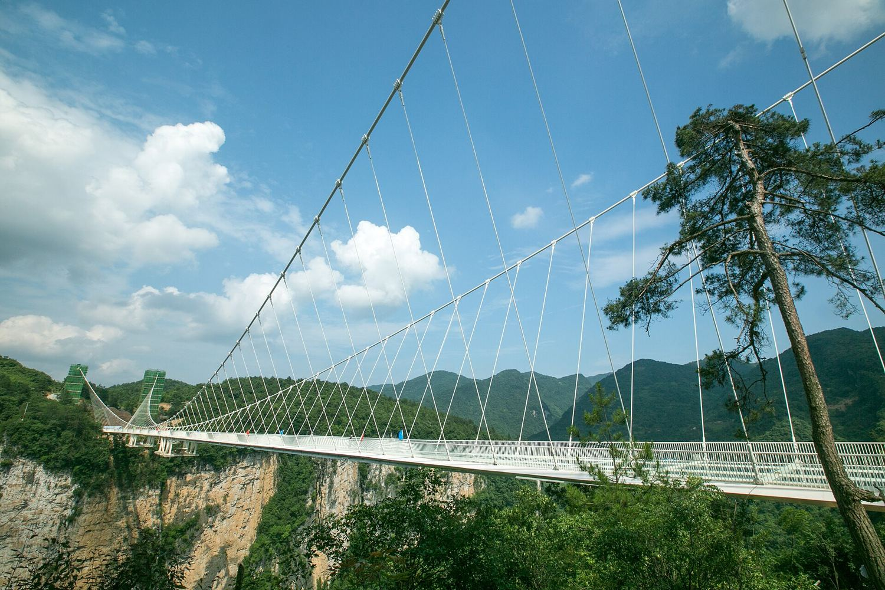
2 часа скоростным поездом из Чунцина. Каменные столбы в облаках, обрывы и стекло под ногами.
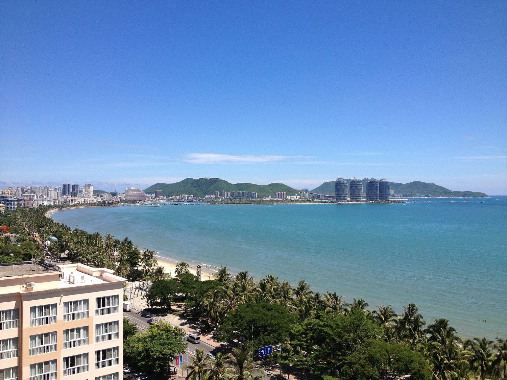
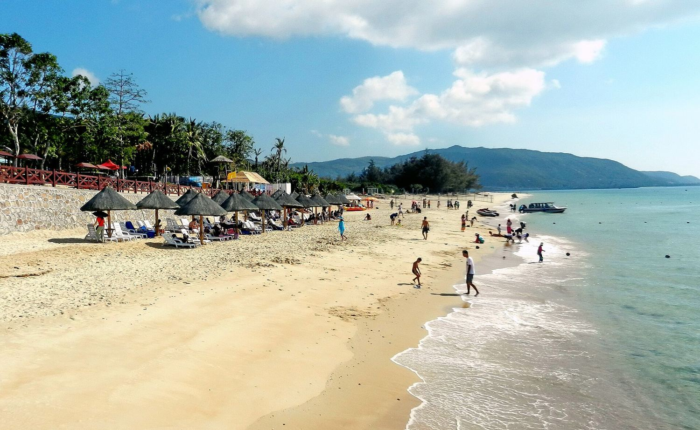
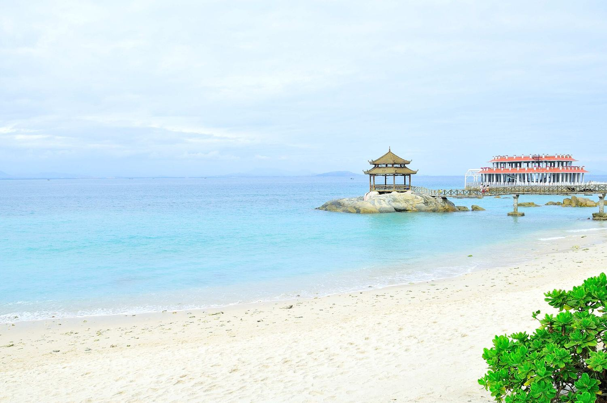
Китайские Гавайи. Белый песок, пальмы, сухой сезон начинается как раз к нашему приезду.
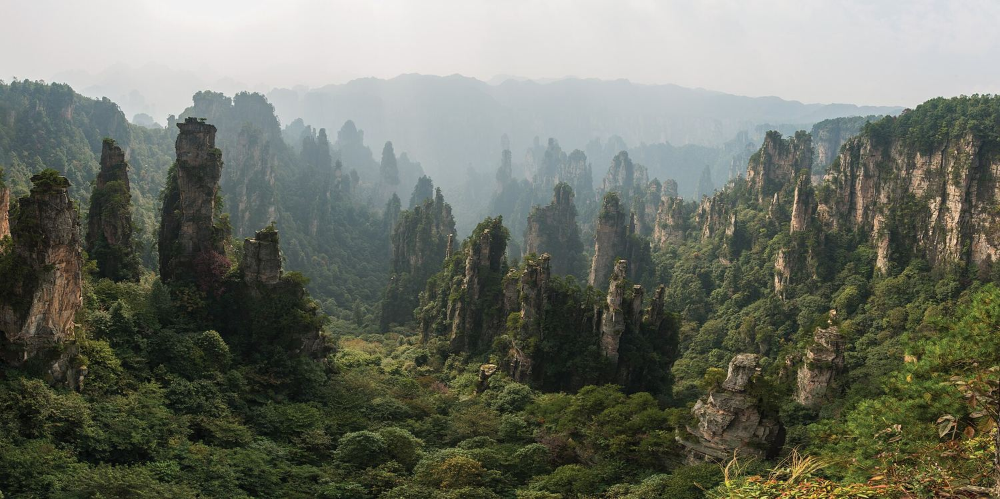
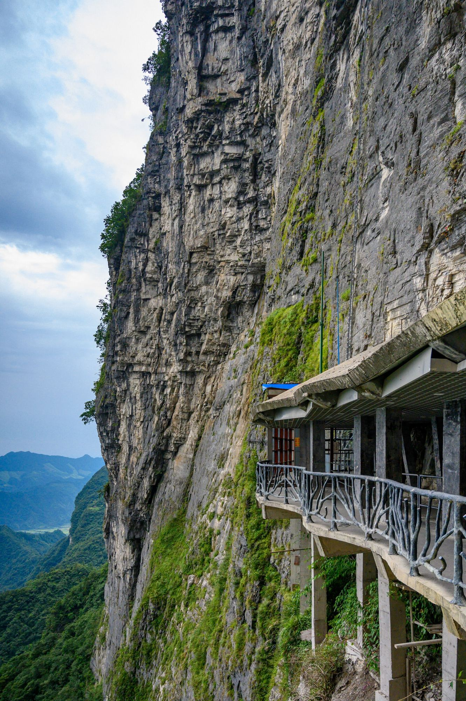
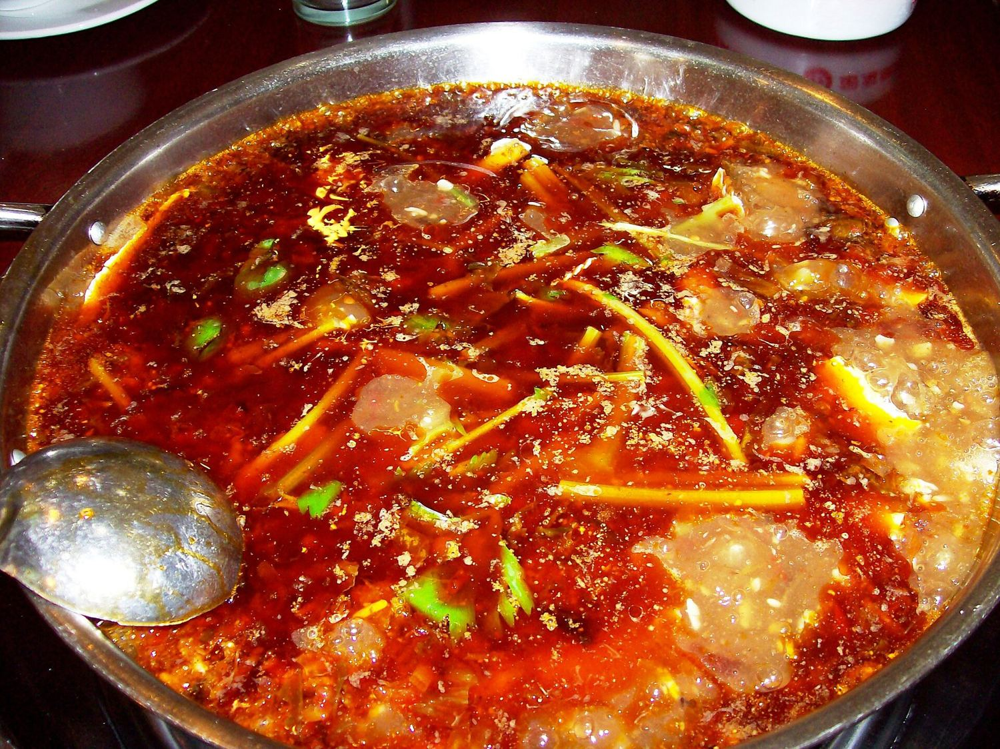
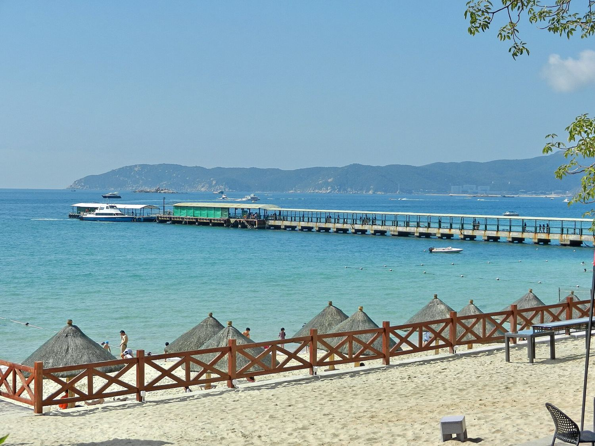
Курс ЦБ на 08.10.2026: 12,75 ₽ за юань. Цены перелётов — ориентир с агрегаторов на октябрь, точные зафиксируем при покупке.
Билеты лучше взять на этой неделе, пока цены не выросли.